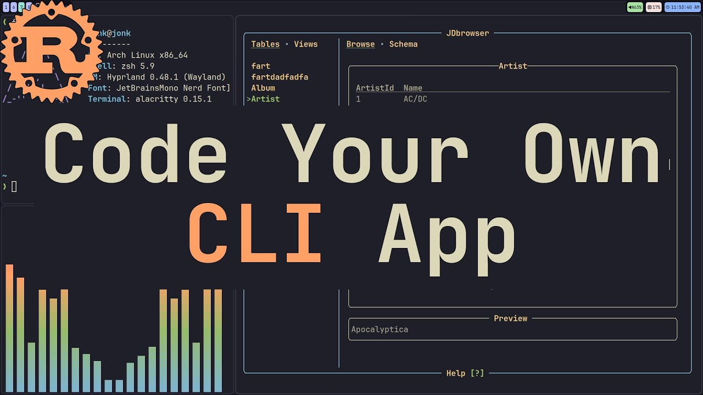

使用 Clap 编写 Rust 命令行 CLI 程序（覆盖所有参数解析类型）

一个像样的应用程序，从命令行开始！本文介绍 Rust 使用最广泛的命令行参数解析工具：Clap，它通过 Derive 特性尽可能简化了结构体和宏的使用，同时还提供了更底层的 Builder API。
1. 命令行有哪些元素？
一个复杂的命令行会有很多种形式的参数、选项和子命令，为了更好地介绍后面的具体实现，我们先明确一下相关的术语和概念。以下面这个 git 命令为例：
1 | git commit -m "fix bug" --amend file1.txt file2.txt |
它可以拆解为：
1 | git -> command |
1.1 Command（命令）
Command（命令）就是编译后的二进制程序名，对于上面的示例就是 git 。
1.2 Subcommand（子命令）
如果一个命令行工具的功能非常多，通常会拆分成多个 Subcommand（子命令），它们一般紧跟在主命令之后，在上面的例子中， commit 就是一个子命令。
1.3 Argument（位置参数）
对于一些极其简单的命令来说，Argument（位置参数）是最简单，解析起来也最容易的参数形式，它没有参数名，在解析时，完全根据它出现的位置来确定它是哪一个参数。在上面的例子中， file1.txt 和 file2.txt 就是位置参数。最常见的位置参数是 cp 命令的两个参数，第一个自动解析为“源文件”，第二个自动解析为“目标文件”。
1.4 Option（选项）
Option（选项）通常是指 --help 或 -h 这种用一个或两个减号做前缀的项，它既可以单独存在，也可以在后面再搭配上一个值，形成 --key value 的形式。在上面的例子中， -m "fix bug" 就是一个典型的 Option（选项）
1.5 Flag（开关）
Flag（开关）实际上是 Option 的一种特殊情况，即一种布尔类型的 Option。当它出现在命令行中时，它所代表的参数值自动取 true ；如果没有出现，则取默认值 false 。在上面的例子中， --amend 就是一个典型的 Flag（开关）。
2. 创建一个示例项目
首先，我们来初始化一个展示 Clap 的示例项目，打开命令行，执行：
1 | cargo init cli-examples |
然后进入到 cli-examples 目录，使用如下命令给项目添加 clap 依赖：
1 | cargo add clap -F derive |
其中 -F derive 是指要启用 clap 的 derive 特性。Rust 的 crate 可以把某些功能做成可选模块，称为 feature。这里的 derive 就是一个 feature。只有开启这个特性，才能在代码中使用 #[derive(Parser)] 等属性。
3. Argument（位置参数）示例
3.1 简单示例
使用 IDE 打开我们的 cli-examples 项目，添加一个 src/bin/example_1.rs 文件，内容如下：
1 | # src/bin/example_1.rs |
上述代码给我们的命令行添加了一个参数，并将参数值赋给了 Args 结构体的 name 字段。所以，如果我们在执行 exe 文件的命令行中写入了一个参数值，例如 my-app ，它会赋值给 name ，并会在第 12 行打印出来。例如：如果我们编译并执行：
1 | .\target\debug\example_1.exe my-app |
则会输出：
1 | args.name = my-app |
上述代码调用了 clap::Parser 派生宏，也就是自动为 Args 实现了 Parser 特质，代码中的调用的 Args::parse() 就是 Args 实现了 Parser 特质的体现。而 #[command(author, version, about, long_about = None)] 也是会被 derive(Parser) 识别的属性。Clap 会读取 #[command(...)] 中配置的各种元数据，然后赋值给 Command 结构体（官方文档： https://docs.rs/clap/latest/clap/struct.Command.html ）。所以 #[command(...)] 里面并不是可以随意填写的，必须是一些规定的元数据信息。这个问题其实换成直接使用 Builder 风格去创建 Command 的实例会更直观一些，就像这样：
1 | use clap::{Arg, Command}; |
至于说，具体有哪些配置的公共元数据，可以参考官方文档： https://docs.rs/clap/latest/clap/_derive/index.html#command-attributes 。这些配置项可以使用 key = value 的形式进行配置，就像前面代码中的 long_about = None 那样。但你也看到，像 author 、 version 、 about 这些配置项都没有显式地赋值，那它们的值是怎么来的呢？答案是 Clap 自动从 Cargo.toml 中读取的应用自身的元数据信息，例如：
-
#[command(author)]读取的是Cargo.toml中的authors信息 -
#[command(version)]读取的是Cargo.toml中的version信息 -
#[command(about)]读取的是Cargo.toml中的description信息
注意，不要因为可以使用 .\target\debug\example_1.exe --version 来查看版本信息就把 #[command(version)] 中出现的 version 当成了命令行中的 --version ，也就是当成了一个 Option，这只是一个巧合而已，命令行不会有 --about 或 --author 这样的参数，并且也不是 command 中配置的任何信息项都能显示出来。 about 的信息会在出现在 --help 输出的第一行内容，而 authors 信息是不显示的。
3.2 为参数设置默认值
如果一个参数在没有设置值的情况下，可以接受一个默认值，则可以在配置中指明。以 name 为例，假设它的默认值是 default-app ，那么，我们就需要在 name 字段上显式地使用 #[arg(...)] 属性标注，为其指定默认值：
1 | /// src/bin/example_2.rs |
此时，如果我们重新编译并执行：
1 | .\target\debug\example_2.exe |
则会输出：
1 | args.name = default-app |
3.3 允许参数为空
在 3.1 节的示例中，命令后必须跟一个 my-app 这样的位置参数，它是不允许为空的，而 3.2 节是给其赋予了一个默认值，防止它为空。如果一个参数没有默认值，也可以为空，那就要使用 Option<T> 类型来包裹：
1 | /// src/bin/example_3.rs |
此时，如果我们重新编译并执行：
1 | .\target\debug\example_3.exe |
则会输出：
1 | args.name = None |
4. Option（选项）示例
在 Clap 中，Argument（位置参数）和 Option（选项）之间仅一步之遥，那就是在原有的 Args 结构体的 name 字段的 #[arg(...)] 属性标注上添加 short 或 long ，这样， name 就从原来“不具名”的位置参数变成了“具名”的 Option。也就是把原来的 arg1 arg2 ... 升级为了 --key1 value1 --key2 value2 的形式。其中，
-
long是指定使用长命名形式，也就是--key value的形式； -
short是指定使用短命名形式，也就是-k value的形式，如果短命名和其他参数冲突，需要另行指定参数的短名称，则应使用#[arg(short = 'x')]进行标注，其中x就是要显式指定的短名称。下面的示例将原来出现在命令行末尾的位置参数改为了 Option 形式，并同时支持--name xxx和-n xxx两种形式：
1 | /// src/bin/example_4.rs |
重新编译并执行：
1 | .\target\debug\example_4.exe --name my-app |
会输出：
1 | args.name = my-app |
5. Flag（开关）示例
正如前面我们介绍的那样，Flag（开关）仅仅是 Option（选项）的一种特殊情形，在 clap 中，这一点体现得尤为明显，因为， 对于一个 Flag 来说，它的声明方式几乎和 Option（选项）是一样的，你只需要将它声明为 bool 类型即可 ，也不需要设置默认值，因为 clap 规定的行为是：如果显式地设置了 Flag，则对应参数值是 true ，如果没有设置，默认值就是 false ，这符合常见的使用习惯。下面的示例是在上一个示例的基础上，添加了一个 Flag 参数 verbose ：
1 | /// src/bin/example_5.rs |
重新编译并执行：
1 | .\target\debug\example_5.exe --name my-app --verbose |
会输出：
1 | args.name = my-app |
如果去除 --verbose 参数：
1 | .\target\debug\example_5.exe --name my-app |
会输出：
1 | args.name = my-app |
6. 选项终止符（–）示例
在一些比较特殊的情况下，我们需要让命令行的解析工作在某一个位置终止，也就是不再把这个位置之后的所有内容当作命令行本身的参数去解析，而是把它们收集起来，作为另一个被调用的命令的参数，这种情况叫：参数转发，比较常见的例子是 kubectl ，当我们需要通过这个命令向一个 pod 推送命令行，就需要使用到选项终止符 -- ，以便告知 kubectl ，在 -- 之后内容不是给它的参数，而是传到 pod 里去执行命令，所以 -- 之后内容不要解析了，单纯地“转发”给 pod 就可以了：
1 | kubectl exec centos7 -- yum -y install telnet |
此外， cargo run 命令本身就是使用选项终止符 -- 的典型例子，以我们运行第一个示例项目为例，它的原始命令是：
1 | .\target\debug\example_1.exe my-app |
但我们完全可以通过 cargo run 命令一键完成从编译到运行的全过程：
1 | cargo run --bin example_1 -- my-app |
在上面这条命令中， -- 之后的所有内容都会转发给编译好的 example_1.exe ，作为它的参数。那在 Clap 中要如何实现上述效果呢？看下面的示例：
1 | /// src/bin/example_6.rs |
重新编译并执行：
1 | .\target\debug\example_6.exe -- a b c |
会输出：
1 | args.others = ["a", "b", "c"] |
这里的关键有两点：
-
用于收集转发参数的需要声明为
Vec<String> -
显式地将字段
others的属性标注为#[arg(trailing_var_arg = true)]
7. Subcommand（子命令）示例
对于一些大型的命令行工具，单一命令无法涵盖其全部功能，此时一般会把它的功能拆分到多个子命令（Subcommands）中去实现。最典型的例子就是 Git，像 git branch <branchName> 、 git tag -a <tagname> -m "version x" 这些命令中的 branch 、 tag 就是典型的子命令。下面的代码提供了四个子命令： init 、 build 、 run 、 clean ，它们每一个都是 Command 枚举的一个变体（成员），每一个变体都可以嵌套自己的 arguments 和 options，只要使用 #[arg(...)] 属性标注出来即可，这和直接在顶层参数结构体 Args 中定义参数是一样的。 Commands 这个枚举需要使用 #[derive(Subcommand)] 进行标注，同时，需要作为字段出现在 Args 结构体中，并使用 #[command(subcommand)] 属性标注：
1 | /// src/bin/example_7.rs |
重新编译并执行命令时，可以分别设置 init 、 build 、 run 、 clean 子命令：
1 | .\target\debug\example_7.exe init my-project --template rust |
8. 嵌套 Subcommand（子命令）示例
从普通的 Subcommand（子命令）演进为嵌套的 Subcommand（子命令）并不困难。原来包含各种子命令的枚举变体内部就是各种参数，如果我们把参数替换成另一个描述子命令的枚举，就实现了嵌套。看一个例子，下面这个示例明显在“模仿”云平台的 CLI 工具，例如 AWS CLI。因为云平台的产品众多，每一个产品又对应非常多的操作命令，所以一般云平台的 CLI 工具会按产品或服务拆分成一级子命令，例如 aws ec2 ... 、 aws s3 ... ，然后在每一种产品或服务下，再嵌套二级子命令，例如 aws ec2 create-vpc ... 、 aws ec2 delete-vpc ... 、 aws s3 mb ... 、 aws s3 rb ... 等等。我们这个例子是这样模拟的：
1 | /// src/bin/example_8.rs |
重新编译，可执行如下一些命令
1 | .\target\debug\example_8.exe compute list --region us-east-1 |
其中 compute 和 storage 是一级子命令， list 、 create 是 compute 下面的二级子命令， upload 是 storage 下面的二级子命令。

参考资料
https://oneuptime.com/blog/post/2026-02-03-rust-clap-cli-applications/view
使用 Clap 编写 Rust 命令行 CLI 程序（覆盖所有参数解析类型）